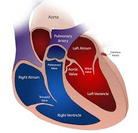
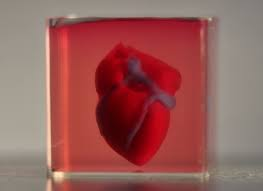

|  |
Se están desarrollando corazones bioartificiales utilizando técnicas de ingeniería de tejidos y bioimpresión 3D. Estos corazones se fabrican utilizando células y biomateriales, y se espera que puedan ser una solución viable para la insuficiencia cardíaca en el futuro. La biocompatibilidad y la integración con el sistema circulatorio son aspectos clave en su fabricación y funcionamiento. |
|
Bioimpresión 3D, una técnica utilizada en la fabricación de órganos bioartificiales, que consiste en depositar células y biomateriales capa por capa para construir una estructura tridimensional precisa y funcional, con el objetivo de desarrollar órganos personalizados y compatibles con el cuerpo humano. |
 |
|
Optimizar la velocidad de producción y la viabilidad celular en la bioimpresión 3D de órganos bioartificiales mediante el desarrollo de biomateriales avanzados y técnicas de impresión más eficientes. |
Es una tecnología prometedora que ofrece la posibilidad de revolucionar la medicina regenerativa y los trasplantes, brindando soluciones personalizadas y reduciendo la dependencia de donantes.